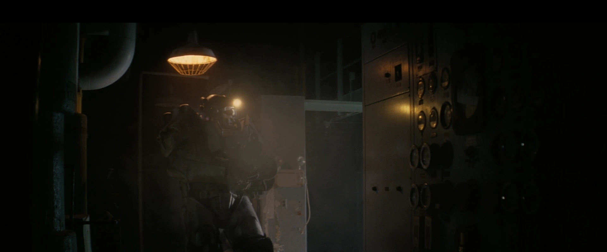

謎の施設 (Shadowy facility)
TVシリーズ ロケーション
LOCATION DATA

The shadowy facility is a location in season 2 of the Fallout TV series.
Background
{{section|FOTV}}In the TV series
The Golden Rule
{{section|FOTV}}=Notable loot=
* Control panelAppearances
The shadowy facility appears only in the Fallout TV series.Gallery
Category:Fallout TV series locations
Impression
（準備中）
（準備中）